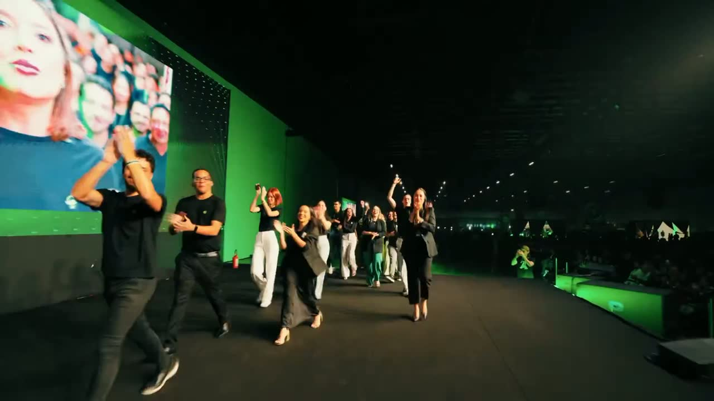
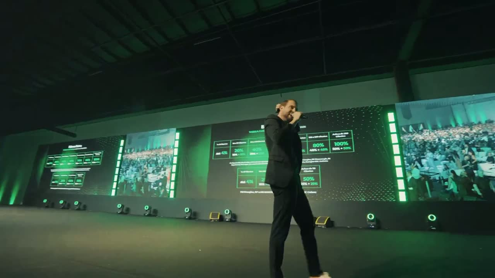
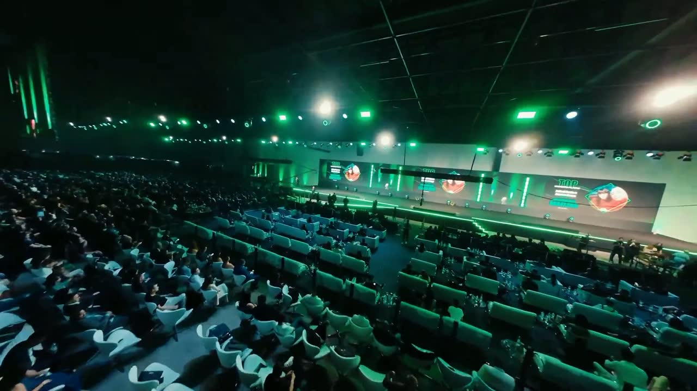

Role para ver a seção
3 edições desde 2024
Cada parada nos ensinou algo novo —
essa é a história que construímos até aqui.

Onde o tour nasceu — uma van, seis palestrantes e um litoral de histórias que se transformou em um movimento.
Março de 2024
A edição mão na massa: casos reais no telão, turmas menores e o método que hoje conduz o tour inteiro pelo país.
Setembro de 2024
Doze mil pessoas sob o mesmo teto — nosso maior palco, o público mais vibrante e um encerramento que bateu recordes.
Agosto de 2025Três edições.
Uma estrada que só cresce.
Fim da seção (opção A)